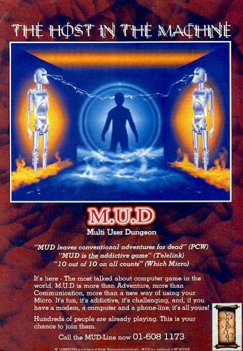

TextSmith
or...
How to Run a Corridor Track in a Remote Conference
(with Python)
Nicholas H.Tollervey / @ntoll


Remote Corridor Track..?


- Interactions are digital transactions.
- Transactions have metadata for analysis.
- Transactions are dislocated (no sense of place).
- Transactions are impersonal (shouting into the void).
- Transactions are evaluated (likes, retweets, reactions).

</rant> ✨ 💩 🐯 👍
Could there be a more...
natural way?
creative way?
expressive way?
authentic way?
Less is more..?

LambdaMOO - a programmable textual world.

A Rape in Cyberspace
What would a MUD/MOO written in 2020 look like?

https://pyweek.org/

(Et voilà, "TextSmith" was born.)
An awful hack written in a week...
Mission: Finish TextSmith

Software is eating the world. ~ Marc Andreessen